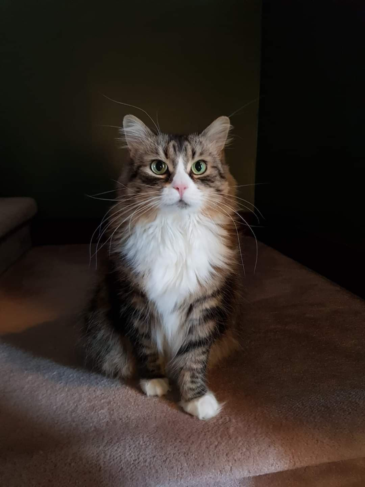

I'm a McWilliams postdoctoral fellow at Carnegie Mellon University. I'm an observational astronomy, and I study the evolution and populations of massive stars, with a particular focus on binary stars and the progenitors of supernova.
I completed my PhD in Astronomy and Astrophyiscs at the University of Toronto under the supervision of Dr. Maria Drout and Dr. Bryan Gaensler. I completed a BSc. Hons. in Physics and Applied Mathematics at Memorial University of Newfoundland and Labrador, supervised by Dr. Ivan Booth and Dr. Hari Kunduri. I'm originally from St. John's, Newfoundland and Labrador, Canada.
Outside of research, I enjoy photography, fiction writing, video games, and spending time with my cat Jupiter, pictured below.

Work
My research involves identifying and analyzing the parameters of large populations of evolved massive stars in nearby galaxies, such as the Magellanic Clouds. I have a particular interest in stellar variability and transient behaviour in the late stage evolution of massive stars, binarity in supernova proenitors, and the low-mass/high-mass divide.